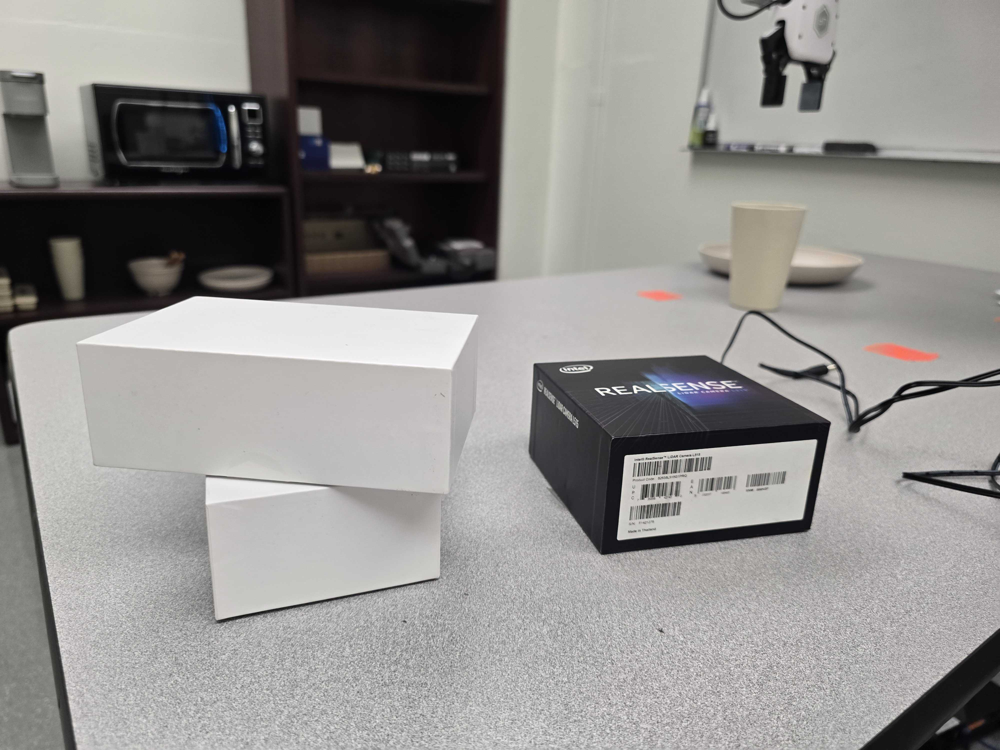

Research Areas
URIL is dedicated to advancing the development of intelligent robots that can be tailored to diverse end-user needs. To achieve this vision, our research focuses on two key areas:
Efficient Robot Skill Learning
We aim to improve the efficiency and adaptability of robots by enabling few-shot and zero-shot learning capabilities. Our approach includes developing structured learning frameworks such as novel action representations that facilitate efficient learning, and intermediate representations of motion that bridge visual representation and low-level motions.
Human Modeling
We draw inspiration from human interaction with the physical world and other agents to design learning algorithms that improve human-robot collaboration. Our efforts focus on both designing algorithms that mirror how humans learn and interact with their environment, and integrating systems that leverage multimodal human cues for human-robot interaction and collaboration in both shared and full autonomy settings.
By addressing these challenges, URIL aims to push the boundaries of robotics, enabling smarter, more adaptable systems that work seamlessly around, for, and with humans.